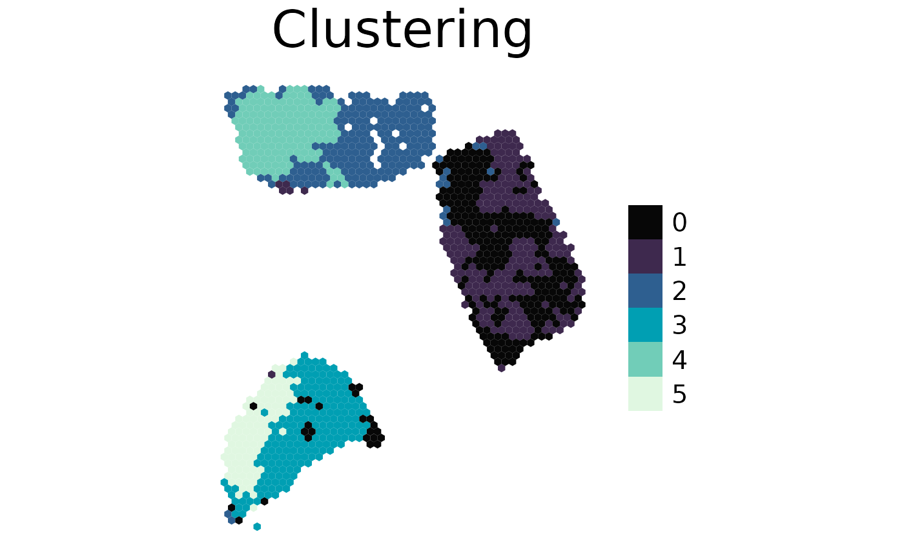

Clustering
spacedeconv_clustering.Rmd
To gain more insights into a tissues composition the clustering function can be applied. It is possible to cluster by expression values, deconvolution results or pathway and transcription factor activities.
library(spacedeconv)
library(SpatialExperiment)
data("single_cell_data_3")
data("spatial_data_3")
single_cell_data_3 <- spacedeconv::preprocess(single_cell_data_3)
#> ── spacedeconv ─────────────────────────────────────────────────────────────────
#> ℹ testing parameter
#> ✔ parameter OK [80ms]
#>
#> ℹ Removing 8 observations with umi count below threshold
#> ✔ Removed 8 observations with umi count below threshold [1.4s]
#>
#> ℹ Removing 5862 variables with all zero expression
#> Warning in spacedeconv::preprocess(single_cell_data_3): There are 13
#> mitochondrial genes present. Consider removing them.
#> ✔ Removed 5862 variables with all zero expression [793ms]
#>
#> ℹ Checking for ENSEMBL Identifiers
#> ! Warning: ENSEMBL identifiers detected in gene names
#> ℹ Checking for ENSEMBL Identifiersℹ Consider using Gene Names for first-generation deconvolution tools
#> ℹ Checking for ENSEMBL Identifiers✔ Finished Preprocessing [9ms]
spatial_data_3 <- spacedeconv::preprocess(spatial_data_3)
#> ── spacedeconv ─────────────────────────────────────────────────────────────────
#> ℹ testing parameter
#> ✔ parameter OK [32ms]
#>
#> ℹ Removing 137 observations with umi count below threshold
#> ✔ Removed 137 observations with umi count below threshold [125ms]
#>
#> ℹ Removing 13049 variables with all zero expression
#> Warning in spacedeconv::preprocess(spatial_data_3): There are 13 mitochondrial
#> genes present. Consider removing them.
#> ✔ Removed 13049 variables with all zero expression [157ms]
#>
#> ℹ Checking for ENSEMBL Identifiers
#> ! Warning: ENSEMBL identifiers detected in gene names
#> ℹ Checking for ENSEMBL Identifiersℹ Consider using Gene Names for first-generation deconvolution tools
#> ℹ Checking for ENSEMBL Identifiers✔ Finished Preprocessing [10ms]
single_cell_data_3 <- spacedeconv::normalize(single_cell_data_3, method = "cpm")
#> ── spacedeconv ─────────────────────────────────────────────────────────────────
#> ℹ testing parameter
#> ✔ parameter OK [19ms]
#>
#> ℹ Normalizing using cpm
#> Warning in asMethod(object): sparse->dense coercion: allocating vector of size
#> 1.4 GiB
#> ✔ Finished normalization using cpm [3.5s]
#>
#> ℹ Please note the normalization is stored in an additional assay
spatial_data_3 <- spacedeconv::normalize(spatial_data_3, method = "cpm")
#> ── spacedeconv ─────────────────────────────────────────────────────────────────
#> ℹ testing parameter
#> ✔ parameter OK [16ms]
#>
#> ℹ Normalizing using cpm
#> ✔ Finished normalization using cpm [369ms]
#>
#> ℹ Please note the normalization is stored in an additional assay
signature <- spacedeconv::build_model(
single_cell_obj = single_cell_data_3,
cell_type_col = "celltype_major",
method = "spatialdwls", verbose = T
)
#> class of selected matrix: dgCMatrix
#> [1] "finished runPCA_factominer, method == factominer"
deconv <- spacedeconv::deconvolute(
spatial_obj = spatial_data_3,
single_cell_obj = single_cell_data_3,
cell_type_col = "celltype_major",
method = "spatialdwls",
signature = signature,
assay_sp = "cpm"
)
#> class of selected matrix: dgCMatrix
#> [1] "finished runPCA_factominer, method == factominer"
First we show how to cluster deconvolution data. Set the data parameter to “deconvolution” and provide the deconvolution tool you used. You can further set the following parameters:
- nclusters: Number of clusters you want, can be a range
- spmethod: should be the deconvolution tool used, or progeny/dorothea when clustering decoupleR results
- method: kmeans or hclust
- dist_method: for hclust, which distance method to use (“correlation”, “euclidean”, “maximum”, “manhattan”, “canberra”, “binary”, “minkowski”)
- hclust_method: for hclust, agglomeration method to us (“complete”, “ward.D”, “ward.D2”, “single”, “average”, “mcquitty”, “median”, “centroid”)
This function applies the Seurat clustering approach in the background. Set data to “expression”, this will use “counts” values for clustering. You can further set the following parameters:
- clusres: Cluster resolution, check the Seurat Vignette for details.
- pca_dim: Number of PCA dimensions to use
cluster <- spacedeconv::cluster(deconv, data = "expression", clusres = 0.5)
#> ── spacedeconv ─────────────────────────────────────────────────────────────────
#> ℹ testing parameter
#> ✔ parameter OK [6ms]
#>
#> ℹ Extracting data
#> ℹ Clustering: expression
#> ℹ Extracting dataℹ Cluster resolution: 0.5
#> ℹ Extracting data✔ Extracted data for clustering [24ms]
#>
#> ℹ Extracting data
#> Warning: The `slot` argument of `GetAssayData()` is deprecated as of SeuratObject 5.0.0.
#> ℹ Please use the `layer` argument instead.
#> ℹ The deprecated feature was likely used in the Seurat package.
#> Please report the issue at <https://github.com/satijalab/seurat/issues>.
#> This warning is displayed once every 8 hours.
#> Call `lifecycle::last_lifecycle_warnings()` to see where this warning was
#> generated.
#> Warning: The `slot` argument of `SetAssayData()` is deprecated as of SeuratObject 5.0.0.
#> ℹ Please use the `layer` argument instead.
#> ℹ The deprecated feature was likely used in the Seurat package.
#> Please report the issue at <https://github.com/satijalab/seurat/issues>.
#> This warning is displayed once every 8 hours.
#> Call `lifecycle::last_lifecycle_warnings()` to see where this warning was
#> generated.
#> Computing nearest neighbor graph
#> Computing SNN
#> ℹ Extracting data
#> ✔ Extracted data for clustering [24.1s]
plot_spatial(
spe = cluster, # plot the clustering stored in this object
result = "cluster_expression_res_0.5",
title = "Clustering",
density=F
)
#> Warning: `aes_string()` was deprecated in ggplot2 3.0.0.
#> ℹ Please use tidy evaluation idioms with `aes()`.
#> ℹ See also `vignette("ggplot2-in-packages")` for more information.
#> ℹ The deprecated feature was likely used in the spacedeconv package.
#> Please report the issue to the authors.
#> This warning is displayed once every 8 hours.
#> Call `lifecycle::last_lifecycle_warnings()` to see where this warning was
#> generated.
#> Warning: `label` cannot be a <ggplot2::element_blank> object.

With an available clustering you can extract the top features for each cluster. Here we extract the top features for each cluster based on expression, but we want the top features from the deconvolution results from this area. See the associated clusters in the plot above.
get_cluster_features(cluster, clusterid = "cluster_expression_res_0.5", spmethod = "spatialdwls")
#> $`0`
#> spatialdwls_Endothelial spatialdwls_T.cells spatialdwls_PVL
#> 0.5972377 0.4385143 0.2566206
#>
#> $`1`
#> spatialdwls_Cancer.Epithelial spatialdwls_Plasmablasts
#> 1.6133398 -0.1128160
#> spatialdwls_B.cells
#> -0.1579763
#>
#> $`2`
#> spatialdwls_CAFs spatialdwls_Normal.Epithelial
#> 0.6753223 0.6311670
#> spatialdwls_B.cells
#> 0.1644404
#>
#> $`3`
#> spatialdwls_Myeloid spatialdwls_CAFs spatialdwls_T.cells
#> 1.4896333 0.6364549 0.3913211
#>
#> $`4`
#> spatialdwls_Normal.Epithelial spatialdwls_PVL
#> 1.78275640 0.76915868
#> spatialdwls_Plasmablasts
#> -0.06106109
#>
#> $`5`
#> spatialdwls_Myeloid spatialdwls_Cancer.Epithelial
#> 0.8857356 0.7512144
#> spatialdwls_Endothelial
#> 0.1940212